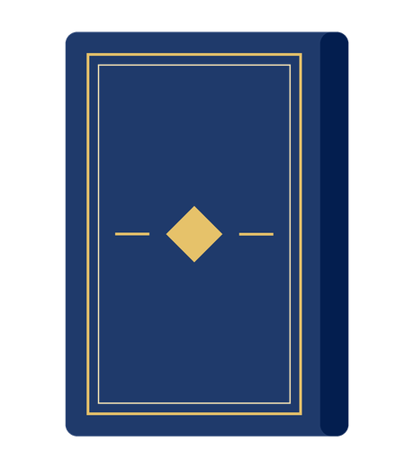

الأغلفة
اكتب اسم الكتاب فيصير غلافاً بشكل المخطوطة
لون الغلاف
جهة الكعب (الكتاب العربي يُجلَّد من اليمين)
غلافاتي
الغلاف يُرسَم من العنوان واسم المؤلف الذي تكتبه فقط؛ وليس صورة غلاف الطبعة الحقيقية للكتاب. تبقى غلافاتك على جهازك وحده.